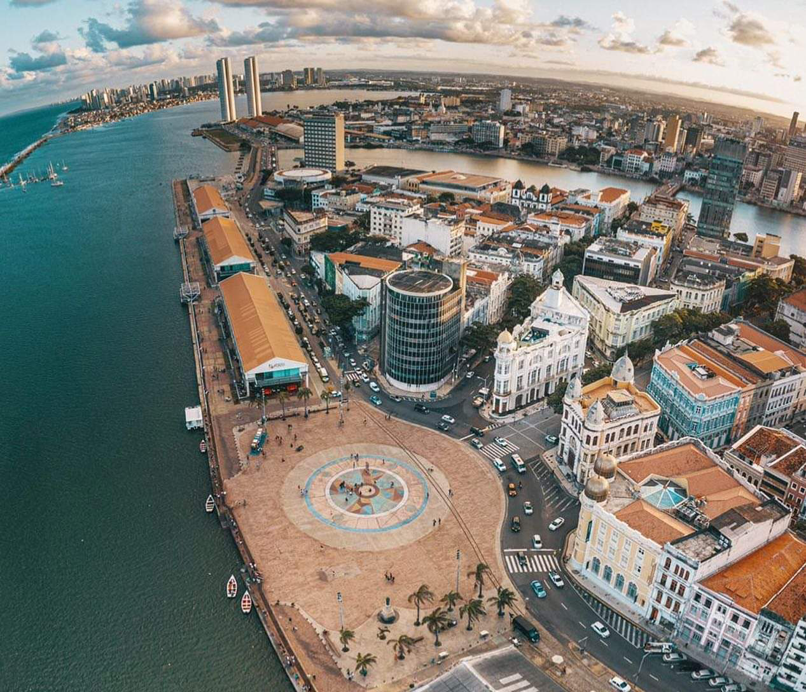

Recife Antigo
Marco Zero
O Marco Zero no Recife Antigo é o lugar de referência onde a cidade nasceu e todas as medidas oficiais de distâncias rodoviárias usam como ponto de partida. Seu nome é, na verdade, Praça Rio Branco e fica ao lado do Porto de Pernambuco. Pode-se dizer que ele se situa no centro histórico da cidade, que é mais conhecido como Recife Antigo por ser a parte onde se iniciou o povoamento da capital pernambucana. A popularização do nome Marco Zero aconteceu desde 1938, devido à instalação do símbolo geográfico na parte central da praça. Ele foi uma doação do Automóvel Clube de Pernambuco. Além disso, há nela uma estátua de bronze de 2,80 metros, de autoria do escultor francês Félix Charpentier.
